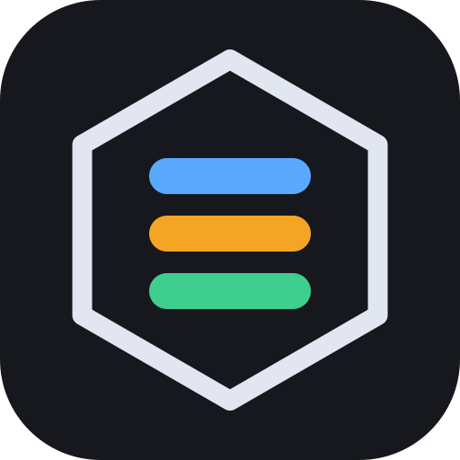
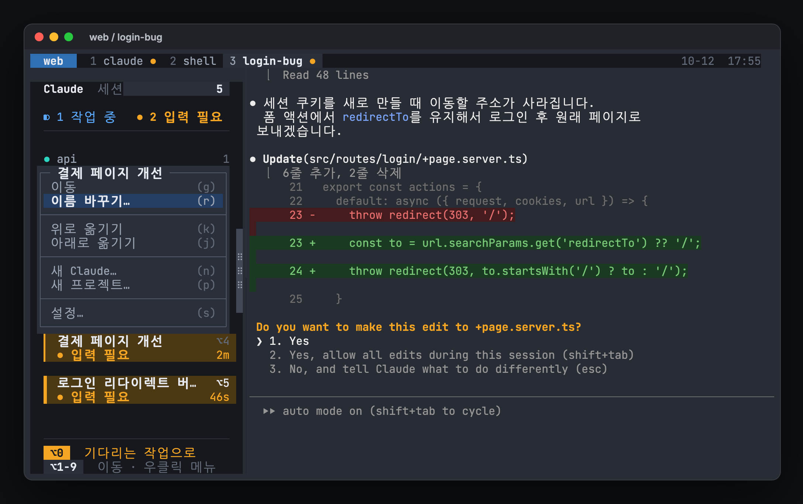
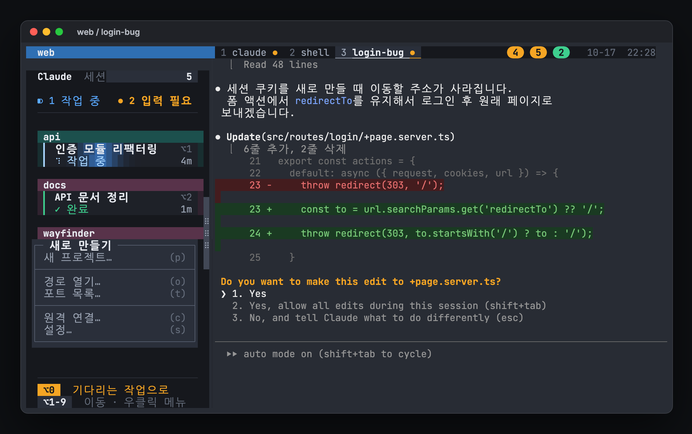
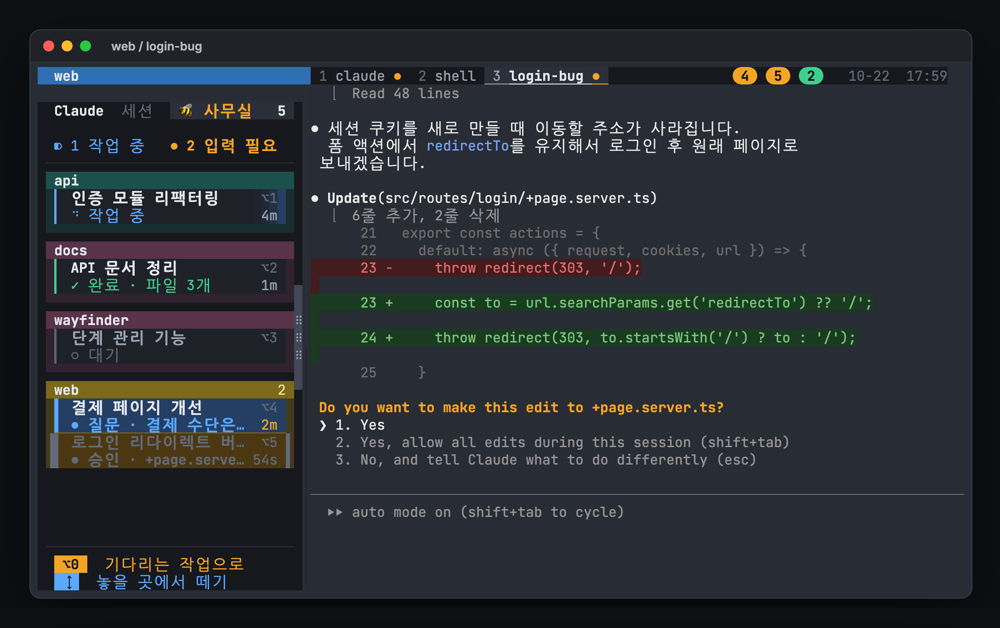
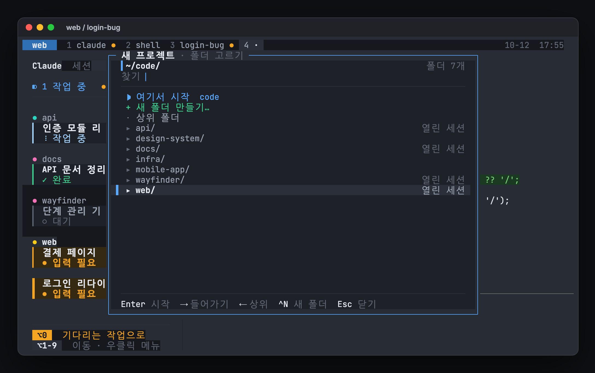
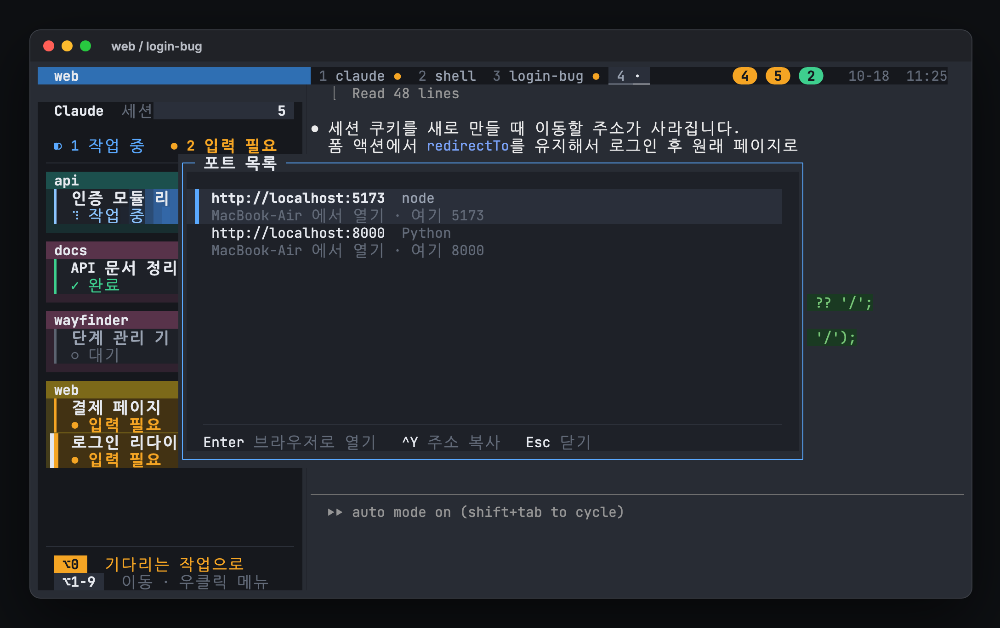
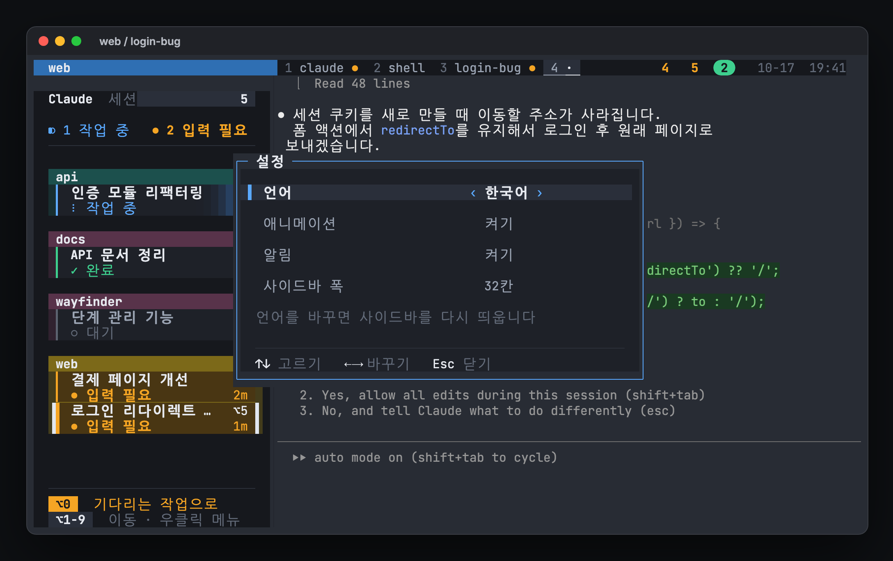

~/project/web ❯ claude -n login-bug
Allow edit to src/routes/+page.svelte?
❯ 1. Yes
2. No

hivemuxGhostty 창을 닫거나 Mac을 재부팅해도 프로젝트별 작업 화면과 Claude Code 대화가 유지됩니다. 밖에서는 폰의 Claude 앱으로 같은 세션을 이어서 쓸 수 있습니다.
예시로 ~/project/claude와 ~/project/web 두 프로젝트를 씁니다. 실제 폴더 경로로 바꿔서 입력하세요.
Dock이나 Spotlight(⌘+Space 후 Ghostty 입력)에서 엽니다. 화면 맨 위에 어두운 상태줄이, 왼쪽에 사이드바가 보이면 tmux 안에 들어온 것입니다.
맨 위 줄은 창 목록이고, 왼쪽의 main은 기본 세션 이름입니다. 왼쪽 사이드바에는 아직 Claude가 없다고 나옵니다. 여기서 바로 프로젝트를 열면 됩니다. 다음부터는 Ghostty를 열면 마지막으로 보던 프로젝트가 바로 열립니다.
hm 뒤에 프로젝트 폴더를 적습니다. 이미 프로젝트 폴더 안에 있다면 hm만 입력해도 됩니다.
hm ~/project/claude
폴더 이름으로 세션이 만들어지고 창 두 개가 생깁니다. 1:claude 창에서는 Claude가 claude -n claude로 이름이 붙은 채 실행됩니다. 2:shell 창은 git이나 개발 서버 같은 명령을 실행하는 용도입니다.
아무 셸 창에서 다른 폴더로 hm를 입력합니다. 예를 들어 Ctrl+A 다음 2로 shell 창으로 간 뒤 입력하세요.
hm ~/project/web
화면이 web 세션으로 바뀝니다. 앞의 claude 프로젝트는 닫히지 않고 뒤에서 계속 실행됩니다.
Ctrl+A 다음 s를 누르면 세션 목록이 뜹니다. 화살표로 고르고 Enter를 누릅니다.
(0) + claude: 2 windows (1) + main: 1 windows (2) + web: 2 windows (attached)
이미 있는 프로젝트에 hm를 다시 입력해도 됩니다. 새로 만들지 않고 그 세션으로 이동만 합니다. 바로 앞뒤 세션으로는 Ctrl+A 다음 ( 또는 )로 이동합니다.
상태줄 가운데의 창 목록이 탭 역할을 합니다. Ctrl+A 다음 창 번호를 누르세요. 마우스로 상태줄의 창 이름을 클릭해도 됩니다.
Ctrl+A 다음 1은 claude 창, 2는 shell 창입니다. n과 p는 다음 창과 이전 창입니다.
화면 왼쪽의 사이드바가 작업 상태판입니다. 어느 프로젝트를 보고 있든 모든 프로젝트의 Claude가 프로젝트별로 묶여 작업 이름과 함께 카드로 항상 표시됩니다. 카드 왼쪽 선의 색이 상태이고, 입력이 필요한 작업은 카드 전체가 호박색입니다. 지금 보고 있는 작업은 양옆에 흰 선이 있는 밝은 카드로 표시됩니다.
Option+번호를 누르면 그 Claude로 바로 갑니다. 프로젝트가 달라도 한 번에 이동합니다. 사이드바의 타일을 클릭해도 됩니다.
Option+0은 가장 오래 기다린 Claude로 갑니다. 주황색 항목이 없으면 끝났는데 아직 안 본 초록색 항목으로 갑니다. 이 키만 반복해서 누르면 기다리는 작업을 차례로 처리할 수 있습니다.
작업 중인 카드는 밝은 빛 띠가 계속 훑고 지나가고 스피너가 돕니다. 입력이 필요한 카드는 호박색으로 깜빡입니다. 맨 위 창 목록에서도 작업 중인 창 옆에 스피너가 돕니다. 번호는 프로젝트 이름순으로 매겨지고 작업이 바뀌어도 그대로라서 손에 익습니다. 타일 아랫줄에 상태와 경과 시간이 보여서 무엇을 먼저 볼지 정할 수 있습니다. 각 프로젝트는 프로젝트 색 머리 띠가 달린 상자로 묶입니다. 사이드바를 넓히면 상자가 2열, 3열로 늘어나고, 같은 프로젝트의 카드는 빈 줄 없이 프로젝트 색 가는 선으로 나뉩니다. 세로로 다 들어가지 않으면 마우스 휠로 스크롤합니다. 위나 아래에 더 있으면 구분선 끝에 ▲ ▼가 보이고, 스크롤 위치는 모든 창이 함께 써서 다른 작업으로 옮겨도 그대로입니다. 사이드바가 거슬리면 Ctrl+A 다음 b로 숨기고 다시 보일 수 있습니다.
Ctrl+A 다음 Shift+C를 누릅니다. 상태줄에 이름 입력 칸이 뜨면 작업 내용을 알 수 있는 이름을 적고 Enter를 누릅니다.
입력 칸에는 web-3처럼 기본 이름이 미리 채워져 있어서 그대로 Enter를 눌러도 됩니다. 입력한 이름이 창 이름이 되고 claude -n login-bug로 실행됩니다.
Ghostty를 그냥 닫으면 됩니다. 실행 중인 Claude는 계속 일합니다. 다음에 Ghostty를 열면 닫을 때의 화면으로 돌아옵니다. 재부팅한 뒤에도 각 창의 Claude 대화가 자동으로 다시 열립니다.
이름은 Claude 입력창 위, /resume 목록, 폰의 Claude 앱 목록, 터미널 제목에 표시됩니다. 세션이 여러 개일 때 이름이 없으면 어느 것이 어떤 작업인지 구분하기 어렵습니다. hm는 폴더 이름을, Ctrl+A 다음 Shift+C는 입력한 이름을 자동으로 붙입니다. 셸에서 직접 실행할 때는 아래처럼 붙이세요. 이름을 정하지 않으면 Claude가 대화 내용을 보고 제목을 자동으로 붙입니다.
/rename이 자동으로 입력되어 폰 앱과 /resume 목록에도 반영됩니다. Claude가 작업 중이거나 승인을 기다리는 중이면 입력이 대답으로 들어가지 않도록 기다렸다가 응답이 끝나면 보냅니다. 그 Claude의 입력창에 쓰다 만 글이 있으면 그 뒤에 붙으니 비워 두세요.# 직접 실행할 때 claude -n login-bug # 이 폴더의 최근 대화 이어가기 claude -c # 실행 중에 이름 바꾸기: 사이드바 카드를 더블클릭 또는 오른쪽 클릭 → 이름 바꾸기, # 그 Claude의 입력창에서 /rename 로그인 버그 수정
사이드바에서 프로젝트 이름 줄을 오른쪽 클릭 → 이름 바꾸기를 고르면 "프로젝트 이름 바꾸기" 팝업이 뜹니다. 프로젝트 이름은 tmux 세션 이름이고, 안의 Claude 작업과 창은 그대로입니다. 사이드바 순서도 유지되고, 재부팅 뒤에도 새 이름으로 복원됩니다. 이미 있는 이름이면 다른 이름을 물어봅니다. 이름을 바꾼 뒤에도 hm ~/code/api는 같은 폴더에서 연 프로젝트로 이동합니다. 점(.), 콜론(:), 공백은 -로 바뀝니다.
탭은 Ghostty가 아니라 tmux 맨 위 상태줄에 생깁니다. 모든 창의 왼쪽에는 전체 작업 사이드바가 붙습니다. Ghostty 창은 하나만 열어 두고, 그 안에서 프로젝트와 창을 바꾸는 방식이 가장 단순합니다.
모든 창의 왼쪽에 사이드바가 있고, 화면 맨 위 한 줄은 지금 프로젝트의 창 목록입니다. 사이드바는 어느 창으로 옮겨도 같은 내용을 보여 줍니다.
맨 위 줄 오른쪽은 호출판입니다. 푸드코트 주문 알림판처럼 입력이 필요한 작업은 호박색, 끝났지만 아직 안 본 작업은 초록 동그란 배지로 뜹니다. 배지 안의 숫자는 그 작업의 ⌥ 번호입니다. 입력이 필요한 작업은 답할 때까지, 끝난 작업은 처음 10초 동안 깜빡입니다. 다른 프로젝트의 작업도 함께 뜨고, 배지를 누르거나 그 번호의 ⌥ 키를 누르면 그 작업으로 갑니다. 끝난 작업은 한 번 보면 사라집니다. 애니메이션을 끄거나 다른 Mac에서 붙어 있으면 깜빡이지 않습니다.
| 카드 | 뜻 | 할 일 |
|---|---|---|
| ● 입력 필요 | 승인이나 답을 기다림. 카드 전체가 호박색으로 깜빡임. 오른쪽 숫자는 기다린 시간 | 가장 먼저 보기. Option+0 |
| ✓ 완료 | 응답을 끝냈고 아직 안 봄. 초록 선 | 결과 확인. 열어 보면 대기로 바뀜 |
| ◐ 작업 중 | 작업 중. 빛 띠가 훑고 지나가고 파란 선이 맥박처럼 밝아짐. 오른쪽 숫자는 작업 시간 | 기다리기 |
| ○ 대기 | 다음 지시를 기다리는 상태. 결과는 이미 봄 | 새 지시를 줄 때 이동 |
| 양옆 흰 선 | 지금 보고 있는 작업 | 없음 |
필수는 아닙니다. 두 프로젝트를 나란히 보고 싶을 때만 쓰세요. Ghostty에서 ⌘+T나 ⌘+N을 누르면 다음 규칙으로 tmux에 연결됩니다.
hm 폴더를 입력하면 원하는 프로젝트로 바뀝니다.사이드바 맨 위의 🐝 사무실 버튼을 누르면 별도 창이 열리고, Claude 세션마다 벌 한 마리가 사무실에서 일합니다. Ctrl+A 다음 Shift+B, 사이드바 오른쪽 클릭 메뉴의 "벌 사무실", 터미널의 hivemux office로도 엽니다. 창은 처음 한 번 Mac의 Swift 컴파일러(Xcode Command Line Tools)로 만듭니다. hivemux setup이 미리 만들어 두고, 아직 없으면 만드는 동안(30초쯤) 진행 상황을 보여 줍니다. 컴파일러가 없으면 브라우저로 엽니다. 다른 Mac에서 붙은 화면에서 열면 그 Mac(붙어 온 쪽)에 창이 열리고, 이 Mac의 세션은 옆 사무실에 나옵니다. 두 Mac 모두 0.1.28 이상이어야 합니다.
사무실이 창 전체를 채우고, 버튼은 위쪽에 떠 있습니다. 세션 목록은 오른쪽 위 ☰ 버튼(또는 L)으로 열고 닫는 서랍입니다. Mac별로 묶여 기다리는 세션이 먼저 나오고, 행에 마우스를 올리면 그 벌 발밑에 꿀색 고리가 생기며, 누르면 그 세션으로 갑니다. 목록이 열리면 사무실은 남은 자리 가운데로 비켜나고, 기다리는 세션이 있는데 닫혀 있으면 ☰ 버튼이 깜빡입니다. 목록을 오른쪽에 둘지 왼쪽에 둘지는 ⚙ 설정의 세션 목록에서 고릅니다.
사무실은 비스듬히 내려다본 모습입니다. 마우스 휠로 확대하고, 끌어서 옮기고, 오른쪽 버튼(또는 Shift)으로 끌면 옆으로는 돌리고 위아래로는 보는 높이를 바꿉니다. 오른쪽 위 버튼과 Q/E(돌리기), W/S(높이), +/-(확대), 0(전체 보기)도 됩니다. 2D 버튼을 누르면 카메라가 바로 위로 올라가 같은 사무실을 평면도로 봅니다. 책상, 카펫, 방, 벌이 그대로이고 벽은 굵은 선, Mac 명패는 왼쪽 벽 위에 놓입니다. 평면도에서는 4분의 1 바퀴씩 돌릴 수 있고, 3D 버튼은 보던 각도로 돌아갑니다. 보기와 모드는 다음에 열 때도 그대로입니다. 사무실 둘레는 나무와 강이 있는 들판입니다. 줌 아웃하면 지붕이 덮이고, 더 줄이면 작은 만화 행성이 됩니다. 각진 풀밭과 물가, 사방으로 솟은 나무 위에 건물이 얹혀 있고, 구름과 작은 비행기가 떠 있습니다. 보기를 돌리면 행성도 함께 돕니다. 밤이면 별이 뜨고 창문과 가로등이 켜집니다. 톱니바퀴에서 늘 낮이나 늘 밤으로 고정할 수 있습니다.
벌이나 책상을 누르면 그 세션을 터미널에 띄웁니다. 톱니바퀴에서 튀어나오기를 끄거나, 화면 공유할 때 작업 이름과 프로젝트 이름을 숨길 수 있습니다. 메뉴의 보기 → Keep on Top(⌘+T)으로 다른 창 위에 띄워 둘 수 있습니다. hivemux connect로 다른 Mac에 붙어 있으면 그 Mac의 세션도 따로 책상을 받습니다. Mac마다 책상 아래에 그 Mac 색의 카펫(이 Mac은 꿀색, 원격은 연보라)이 깔리고, 왼쪽 벽에 같은 색 띠의 Mac 이름 명패가 붙습니다. 이름은 설정의 "이 Mac 이름"으로 바꿀 수 있습니다. 그 Mac도 이 버전의 hivemux여야 합니다.
퇴근과 출근: 위쪽 🌙 퇴근 버튼(또는 사이드바 오른쪽 클릭 메뉴의 "퇴근하기…")을 누르면 확인을 받은 뒤 모든 Claude를 끕니다. 벌들은 박수를 치고, 엘리베이터로 내려가 마당 너머 마을의 자기 집으로 걸어가서 쉽니다. 밤이면 불을 끄고 잡니다. 일하거나 나를 기다리던 Claude는 "야근 중" 표시를 달고 남았다가, 끝나면 꺼지고 퇴근합니다. ☀️ 출근을 누르면 모두 같은 대화로 다시 시작하고(claude --resume), 벌들은 집에서 나와 자리로 걸어옵니다. 퇴근 중에 재부팅하면 다시 띄우지 않고, 출근할 때 띄웁니다. 모두 퇴근하면 사이드바에 "🌙 퇴근 중 · 눌러서 출근"이 보입니다.
입사, 퇴사, 꿀 순위: 벌 한 마리는 프로젝트와 그 안의 Claude 이름입니다. 그래서 /clear나 새 대화를 해도 같은 벌입니다. 처음 보이면 "신입"으로 엘리베이터에서 걸어 들어오고, 프로젝트를 닫으면 퇴사합니다(집에 "빈집" 팻말). 같은 이름으로 다시 열면 재입사해서 같은 집으로 돌아오고 재입사 횟수가 쌓입니다. 작업이 끝날 때마다 그 벌의 꿀이 한 칸씩 장부에 쌓입니다. 목록 서랍의 꿀 순위 탭에서 오늘, 이번 주, 이번 달 순위를 보고, 뒷벽에는 "이달의 꿀벌" 액자가 걸립니다. 벌집 48칸이 다 차면 꿀단지에 담겨 아래 선반에 쌓이고 벌집은 다시 비워집니다.
Ctrl+A를 눌렀다 뗀 뒤 다음 키를 누릅니다. Claude Code가 Ctrl+B를 쓰기 때문에 tmux 기본값 대신 Ctrl+A로 바꿨습니다. 대문자와 소문자는 다른 키입니다.
현재 폴더에서 셸이 열린 새 창을 만듭니다. git, 테스트, 개발 서버처럼 명령을 직접 입력할 때 씁니다.
창 이름은 실행 중인 프로그램 이름(zsh 등)으로 자동 표시됩니다.
이름을 물어본 뒤, 현재 폴더에서 그 이름으로 Claude를 실행한 새 창을 만듭니다.
입력한 이름이 창 이름이 됩니다. Claude를 끝내도 창은 셸 상태로 남습니다.
hm처럼 시작, → / ←는 폴더 안 / 상위로, 글자를 치면 걸러 보기 (.으로 시작하면 숨김 폴더도), Ctrl+N은 새 폴더hivemux connect로 붙은 상대 Mac에 이 이름이 보이고, 비우면 Mac 원래 이름). 바꾸면 바로 적용되고 ~/.local/share/hivemux에 저장되어 재시작 뒤에도 유지됨. 언어를 바꾸면 사이드바를 다시 띄움





hm 폴더프로젝트 세션을 만들거나 그 세션으로 이동글꼴은 Ghostty 설정에서 바꿉니다. 터미널 전체에 적용되며 사이드바나 상태줄만 따로 키울 수는 없습니다. 지정하지 않으면 Ghostty 내장 글꼴인 JetBrains Mono가 쓰이고, 한글은 시스템 글꼴로 대신 표시됩니다.
/Applications/Ghostty.app/Contents/MacOS/ghostty +list-fonts | grep -v "^ " | sort -u
한글을 많이 쓴다면 한글과 영문 폭이 잘 맞는 D2Coding을 권장합니다.
~/.config/ghostty/config를 열어 아래 줄을 넣습니다. hivemux 블록 밖이면 어디에 넣어도 됩니다.
font-family = "D2Coding" font-size = 15 # 한글만 다른 글꼴로 쓰려면 한 줄 더 (앞 글꼴에 없는 글자를 뒤 글꼴로) # font-family = "Apple SD Gothic Neo"
Ghostty에서 ⌘+Shift+,를 누르면 설정을 다시 읽습니다. 크기만 잠깐 바꾸려면 ⌘++, ⌘+-, ⌘+0을 쓰세요.
글꼴을 키우면 한 화면에 들어가는 칸이 줄어 사이드바가 상대적으로 넓어집니다. 그때는 사이드바 폭을 줄이세요.
Anthropic이 만든 공식 Claude 앱을 씁니다. iPhone은 App Store, Android는 Google Play에서 "Claude"를 검색하세요. 개발사가 Anthropic인지 확인하세요.
Mac의 Claude Code와 같은 claude.ai 계정으로 로그인합니다. 앱 메뉴의 Code에서 Mac의 세션 목록이 보입니다. 브라우저에서는 claude.ai/code로 들어가도 됩니다.
Pro, Max, Team, Enterprise 구독에서 쓸 수 있습니다. API 키 로그인으로는 쓸 수 없습니다.
코드 실행과 파일 접근은 Mac에서 처리됩니다. 폰에서는 대화를 보고 메시지를 보냅니다.
설정에서 모든 세션을 자동 연결하도록 켜 두었습니다. Claude 앱의 Code 목록에 바로 보입니다. 터미널에서 /remote-control을 입력하면 QR 코드도 볼 수 있습니다.
그 폴더에서 Ctrl+A 다음 Shift+R로 서버 창을 열어 두세요. git 저장소면 세션마다 별도 worktree를 만들어 서로 충돌하지 않습니다.
Claude Code에서 /config를 열고 Push when actions required를 켜세요. 승인이 필요할 때 폰으로 알림이 옵니다.
caffeinate -dis
작업은 한 Mac(예: 사무실 Mac)의 tmux에서 계속 돌고, 다른 Mac(예: 노트북)은 ssh로 그 tmux에 붙어 같은 사이드바와 세션을 봅니다. 연결이 끊겨도 작업은 계속됩니다. 노트북의 로컬 작업은 그대로 두고, 원격은 따로 Ghostty 창으로 엽니다.
hivemux를 설치하고 시스템 설정 → 일반 → 공유 → 원격 로그인을 켭니다. 잠들면 붙을 수 없으니 시스템 설정 → 에너지에서 자동으로 잠자지 않게 해 두세요. hivemux doctor의 remote 항목에서 확인할 수 있습니다.
hivemux를 설치하고 hivemux connect --add나 원격 연결 목록의 "+ 호스트 추가…"로 호스트를 등록합니다. 처음에는 호스트를 믿을지와 상대 Mac의 로그인 비밀번호를 한 번 묻고, 이 Mac의 ssh 키를 상대에 등록합니다. 그다음부터는 비밀번호 없이 붙습니다. 등록할 때 상대에 hivemux가 있는지도 확인합니다.
같은 네트워크에서는 이름.local로 붙습니다. 밖에서는 Tailscale 같은 VPN을 두 Mac에 설치하고 그 기기 이름을 쓰는 방법이 간단합니다. 공유기 포트 포워딩으로 ssh를 인터넷에 여는 것은 권하지 않습니다.
# 붙는 쪽 Mac에서 한 번 hivemux connect --add me@work-mac.local # 연결: 사이드바 오른쪽 클릭 → 원격 연결, Ctrl+A 다음 Shift+H (마지막 호스트), 또는 hivemux connect me@work-mac.local
호스트에는 ssh에 쓰는 것이면 무엇이든 넣습니다. ~/.ssh/config의 Host, 사용자@주소, VPN 안의 기기 이름 모두 됩니다.
원격으로 붙은 창은 상태줄 오른쪽 시계 앞에 보라색 ⇄ Mac 이름이 붙습니다. 원격 창에서 "원격 연결"을 고르면 상대 Mac 화면에 창이 열리므로 막아 둡니다.
화면 가운데에 "연결이 끊겼습니다" 상자가 뜨고, 남은 시간을 센 뒤 저절로 다시 붙습니다. 끊긴 이유(ssh 메시지)도 보입니다. Enter는 지금 연결, Ctrl+C는 그만. Ctrl+A 다음 d로 떼면 창이 닫힙니다.
원격 작업의 알림도 이 Mac에 뜹니다. --mosh로 등록하거나 원격 연결 목록에서 m을 누르면 잠자기와 네트워크 변경을 스스로 견디지만 알림이 지나가지 못합니다. 목록에는 "mosh · 알림 없음"으로 표시됩니다. 두 Mac 모두 brew install mosh가 필요하고, UDP에서 멈추면 상대 Mac의 방화벽에서 mosh-server를 허용하세요.
원격으로 붙어 있는 동안, 상대 Mac의 tmux 안에서 시작된 개발 서버(Claude나 셸이 띄운 npm run dev, rails s 등)는 저절로 이 Mac의 localhost 같은 포트로 이어집니다. 상대 Mac에서 5173으로 뜬 서버는 이 Mac 브라우저에서 http://localhost:5173으로 열립니다. 주소가 localhost 그대로라 로그인 콜백이나 쿠키 설정을 바꿀 필요가 없습니다.
hivemux connect --ports. 끄려면 HIVEMUX_PORTS=0 hivemux connect <host>.Claude Code의 Ctrl+V는 Claude가 도는 Mac의 클립보드에서 이미지를 읽습니다. 그래서 원격 화면에서는 이 Mac에서 찍은 스크린샷이 붙지 않았습니다. 이제 원격 Claude 칸에서 Ctrl+V를 누르면 이 Mac 클립보드의 이미지를 상대 Mac으로 보내 [Image #1]로 붙입니다. 상대 Mac의 클립보드는 건드리지 않습니다. 클립보드에 이미지가 없으면 상태줄에 알려 줍니다. 포트 연결과 같은 ssh 연결을 쓰므로 HIVEMUX_PORTS=0이면 이것도 꺼지고, 두 Mac 모두 hivemux 0.1.26 이상이어야 합니다.
원격 칸에서 hivemux open <파일>을 실행하면 그 파일을 이 Mac으로 복사해 기본 앱으로 엽니다(사진은 미리보기). Claude에게 "스크린샷을 hivemux open으로 보여 줘"라고 하면 Claude가 원격 Mac에서 찍은 캡처가 지금 앞에 있는 Mac에 뜹니다. Option+O 팝업의 Tab도 같고, 원격 화면에서 🐝를 누르면 벌 사무실도 이 Mac에서 열립니다. 같은 ssh 연결을 쓰고, 두 Mac 모두 hivemux 0.1.29 이상이어야 합니다.
먼저 기억 중인 목록과 재개 기록을 보세요. 목록에 없으면 마지막 저장 전에 시작했거나 /exit로 끝낸 세션입니다.
hivemux-panes list cat ~/.local/share/hivemux/panes.log
기록에 busy가 있으면 그 창이 셸 프롬프트가 아니어서 건너뛴 것입니다. pane missing이면 배치가 바뀌어 창이 없어진 것입니다. 이럴 땐 그 폴더에서 claude -c로 이어가면 됩니다.
자동 저장은 5분마다 일어납니다. 중요한 작업을 시작했다면 바로 저장하세요.
Ctrl+A → Ctrl+S
# 다음 시작 때 복원 끄기. 지우면 다시 켜집니다 touch ~/tmux_no_auto_restore # 배치만 복원하고 Claude는 재개하지 않기 (tmux 서버가 떠 있을 때) tmux set-environment -g HIVEMUX_NO_RESUME 1
맨 위 창 목록의 아이콘은 창 단위라서 한 창을 분할해 Claude를 여럿 띄우면 마지막으로 바뀐 상태만 보입니다. 사이드바는 칸 단위라서 각각 따로 보입니다. Claude를 끝내면 표시가 지워집니다.
Remote Control은 claude.ai 구독 로그인이 필요하고 API 키로는 안 됩니다. 로그인 상태를 확인하세요. 설정이 켜지기 전에 시작한 세션은 자동 연결되지 않으니 그 세션에서 /remote-control을 입력하세요.
claude auth status
Mac이 잠들었거나 네트워크가 바뀌면 잠시 오프라인으로 보입니다. 깨어나면 자동으로 다시 연결됩니다.
새 세션은 서버 모드 창이 있어야 만들 수 있습니다. 그 폴더에서 Ctrl+A → Shift+R을 누르세요. 처음에는 Remote Control 사용과 폴더 신뢰를 묻는데 둘 다 y로 답합니다.
/config에서 푸시 항목을 켰는지 보세요. No mobile registered가 보이면 폰에서 Claude 앱을 한 번 여세요. iOS 집중 모드가 알림을 막을 수도 있습니다. 터미널을 보고 있는 동안에는 일부러 보내지 않습니다.
지금 보고 있는 창의 작업은 알리지 않습니다. 터미널을 뒤로 보내거나 다른 창에 있을 때만 뜹니다. 사이드바 오른쪽 클릭 메뉴 → 설정에서 알림이 켜기인지, 시스템 설정 → 알림에서 Ghostty(쓰는 터미널)가 허용돼 있는지 확인하세요. 알림은 터미널 알림 신호(OSC 777)로 보내므로 Ghostty처럼 이를 지원하는 터미널에서 뜹니다. 알림은 사이드바가 보내므로, 사이드바를 숨기면(Ctrl+A 다음 b) 알림도 오지 않습니다.
사이드바는 Claude 훅이 기록한 값을 1초마다 읽습니다. 사이드바 기능을 넣기 전에 시작한 Claude는 다음 프롬프트를 보내거나 도구를 실행하면 나타납니다. tmux 밖에서 실행한 Claude는 표시되지 않습니다.
# 사이드바 내용을 글자로 보기
hivemux-agents listCtrl+A 다음 b를 두 번 누르면 모든 창의 사이드바를 다시 만듭니다. 폭은 오른쪽 클릭 메뉴 → 설정의 사이드바 폭에서 바꾸거나, 사이드바 오른쪽 끝 세로 가운데의 핸들 막대(밝은 세로 막대에 ⠿ 무늬, 잡으면 파랗게 바뀜)이나 경계선을 마우스로 끌어서 바꾸세요. 누르는 동안 경계선이 파랗게 바뀌고 포인터가 좌우 크기 조절 모양이 됩니다. 손을 놓으면 모든 창의 사이드바가 같은 폭으로 맞춰지고, 그 폭이 저장되어 재시작 뒤에도 유지됩니다. 기본 폭은 32칸입니다. 명령으로 바꾸려면 아래처럼 하세요.
tmux set -g @hivemux-sidebar-width 40 hivemux-sidebar fix # 저장한 폭을 지우고 기본 32칸으로 rm ~/.local/share/hivemux/sidebar-width # 사이드바가 멈췄거나 이상하면 모두 다시 띄우기 hivemux-sidebar respawn
사이드바 칸으로 입력 초점이 옮겨졌다면 q나 Esc를 누르면 원래 칸으로 돌아갑니다. 사이드바에서 숫자 키를 눌러도 그 작업으로 이동합니다.
· 창이 생긴다터미널이름 바꾸기, 새 프로젝트, 설정, Option+O, Option+W 팝업은 지금 화면을 멈춘 사본 위에 뜹니다. · 창이 그 사본이고, 팝업을 닫으면 원래 창으로 돌아가며 사라집니다.
tmux 3.7은 Claude가 출력하는 한글 같은 두 칸 폭 글자를 그 위의 팝업과 메뉴를 뚫고 그려서, 출력 중인 화면 위에 바로 띄우면 팝업이 깨집니다. 오른쪽 클릭 메뉴는 같은 이유로 사이드바가 직접 그립니다.
사이드바 오른쪽 클릭 메뉴 → 설정에서 애니메이션을 끄기로 바꾸면 바로 멈추고, 저장되어 재시작 뒤에도 꺼져 있습니다. 명령으로 이번만 끄려면 아래처럼 하세요.
tmux set -g @hivemux-anim off
# 끄지 않고 CPU만 줄이려면 초당 프레임을 낮추세요 (기본 30)
tmux set -g @hivemux-fps 15Ghostty가 Option 키를 Alt로 보내야 합니다. 설정에 들어 있지만 Ghostty를 설정 변경 전부터 켜 두었다면 완전히 종료하고 다시 여세요. 그래도 안 되면 Ctrl+A 다음 Space를 쓰거나 사이드바 타일을 클릭하세요.
Option+O를 누르면 그 칸의 최근 출력에 나온 파일 경로가 최근 것부터 나옵니다. 실제로 있는 파일만 보여 주고, 상대 경로는 Claude의 작업 폴더 기준으로 찾습니다. 파일:42처럼 줄 번호가 붙어 있으면 설정의 편집기로 그 줄을 엽니다. 다른 Mac에서 hivemux connect로 붙은 화면에서는, 편집기가 VS Code나 Cursor면 그 Mac(접속한 쪽)에서 원격 SSH로 파일을 엽니다(그 Mac에 Remote - SSH 확장이 있어야 합니다). Tab(기본 앱)은 파일을 그 Mac으로 복사해 거기 기본 앱으로 엽니다(사진은 미리보기, PDF, HTML은 브라우저). 그 밖의 편집기와 Ctrl+F는 파일이 있는 이 Mac에서 열립니다. 터미널이나 Claude에서는 hivemux open <파일>이 같은 일을 합니다: 붙어 온 화면이 보고 있으면 그 Mac에서, 아니면 이 Mac에서 엽니다. 그래서 원격으로 일할 때 Claude에게 "스크린샷을 hivemux open으로 보여 줘"라고 하면 노트북에 바로 뜹니다. 두 Mac 모두 이 버전이어야 합니다.
⌘+클릭은 Claude가 경로를 링크로 내보낼 때만 됩니다. 링크 설정은 Ghostty를 다시 열어 tmux에 새로 붙고, Claude를 새로 시작한 뒤부터 적용됩니다.
tmux 확장 키 설정이 아직 적용되지 않은 서버입니다. 설정을 다시 읽거나 Ghostty를 새로 여세요. 급하면 Ctrl+J로 줄바꿈할 수 있습니다.
tmux source-file ~/.tmux.conf
새 탭은 분리된 세션이 있으면 거기에 붙고, 없으면 새 세션을 만듭니다. 모든 세션이 이미 다른 탭에 붙어 있으면 새 세션이 생깁니다. 원하는 세션으로 옮기려면 Ctrl+A → s를 쓰세요.
tmux 서버는 처음 띄운 환경의 PATH를 물려받습니다. Ghostty가 아닌 곳에서 서버를 먼저 띄웠다면 생길 수 있습니다. 서버를 끝내고 Ghostty로 다시 여세요. 실행 중인 작업이 모두 끝나니 주의하세요.
tmux kill-server
hivemux uninstall로 hivemux가 추가한 것만 지울 수 있습니다. 설치 때 바꾼 파일의 원본은 백업 폴더에 시각과 함께 저장되어 있습니다.
hivemux uninstall ls -la ~/.local/share/hivemux/backups/
| 상황 | tmux 세션과 배치 | Claude 대화 | 폰 연결 |
|---|---|---|---|
| Ghostty 창 닫기 | 그대로 | 계속 실행 | 유지 |
| Ghostty 앱 종료 | 그대로 | 계속 실행 | 유지 |
| Mac 잠자기 (덮개 닫기) | 그대로 | 멈춤 후 이어감 | 깨면 재연결 |
| 재부팅, 강제 종료 | 마지막 저장 시점으로 복원 | 자동 재개 | 재개 후 다시 등록 |
/exit 또는 Ctrl+D로 종료 | 창은 남음 | 재개 대상에서 빠짐 | 종료 |
tmux 서버가 없으면 임시 세션 하나로 서버를 띄웁니다.
마지막 스냅샷으로 세션, 창, 분할, 폴더를 다시 만들고 임시 세션을 지웁니다.
저장해 둔 창과 세션 ID 목록을 읽습니다. 셸 프롬프트 상태인 창에만 원래 폴더로 이동해 claude --resume <ID>를 입력합니다.
대화가 열리고 Remote Control에 자동 등록되어 폰에도 다시 나타납니다.
복원 전에 마지막으로 보던 세션에 붙고, 입력 초점이 사이드바에 있는 창은 작업 칸으로 옮깁니다. 두 번째 Ghostty 창은 그다음으로 최근에 본 세션에 붙습니다.
# 설치 curl -fsSL https://raw.githubusercontent.com/esteban-eg-kim/hivemux/main/install.sh | bash # 또는 Homebrew brew install esteban-eg-kim/tap/hivemux && hivemux setup # 업데이트 (git 설치는 위 설치 명령을 다시 실행) brew update && brew upgrade hivemux && hivemux setup # Claude Code 업데이트 (칸마다 Claude 를 새 버전으로 다시 시작) hivemux update-claude # 버전 / 점검 / 제거 hivemux version hivemux doctor hivemux uninstall
hivemux setup은 기존 설정 파일을 바꾸지 않고, # >>> hivemux >>> 표시 사이에 블록만 추가합니다. hivemux uninstall은 그 블록과 hivemux 훅만 지웁니다. 다시 실행해도 안전합니다.
업데이트할 때 hivemux setup을 다시 실행하면, 새 버전에서 늘어난 훅을 등록하고 실행 중인 tmux 설정을 다시 읽은 뒤 사이드바를 다시 띄웁니다. 쓰던 세션은 그대로입니다. 업데이트 전에 시작한 Claude는 다시 시작해야 새 훅을 씁니다.
Claude Code 업데이트: 실행 중인 Claude는 다시 시작하기 전까지 예전 버전으로 돕니다. 오른쪽 클릭 메뉴 → Claude 업데이트(또는 hivemux update-claude)는 먼저 설치된 버전과 최신 버전(Homebrew 설치면 Homebrew 기준)을 보여 줍니다. 이미 최신이면 "최신 버전입니다"로 끝나고, 새 버전이 있으면 몇 개의 Claude가 다시 시작되는지 알려 주며 y로 확인을 받은 뒤 Claude Code를 업데이트하고(Homebrew로 설치했으면 brew로, 아니면 claude update), 예전 버전으로 도는 칸의 Claude를 새 버전으로 다시 시작합니다. 재부팅 뒤처럼 claude --resume으로 열어 대화는 그대로이고, 끝났는데 아직 안 본 작업은 그 상태로 남습니다. 일하는 중이거나 나를 기다리는 Claude, 지금 화면에 보이는 창의 Claude(입력 중일 수 있음)는 건드리지 않고, 일이 끝나고 화면에서 벗어나면 다시 시작합니다. 이미 최신이어도 예전 버전으로 도는 Claude가 있으면 다시 시작합니다.
~/.tmux.confhivemux 블록이 share/hivemux.tmux와 선택한 권장 키 share/keys.tmux를 불러옵니다~/.config/ghostty/confighivemux 블록이 모든 Ghostty 창을 hivemux-attach로 tmux에 붙입니다~/.claude/settings.jsonhivemux 훅 열한 개, 선택하면 모든 세션 Remote Control~/.local/share/hivemux/플러그인, 칸과 세션 목록(panes.tsv), 재개 기록(panes.log), 사이드바 폭과 설정(mac-name 등), 벌 사무실 창(office/, 빌드 실패 이유는 office/build.log), 설정 백업~/.local/share/tmux/resurrect/tmux-resurrect 배치 저장본hivemux, hm설치·점검·제거 명령, 프로젝트 열기hivemux-attachGhostty 진입점. 서버가 없으면 복원 후 마지막 세션에, 있으면 최근 세션에 붙습니다hivemux-rename-project, hivemux-rename-project-ui프로젝트 이름 바꾸기와 그 팝업hivemux-connect, hivemux-connect-ui원격 연결 (hivemux connect)과 그 팝업hivemux-ports, hivemux-ports-ui원격 연결 중 상대 Mac의 개발 서버 포트를 이 Mac으로 잇기와 포트 목록 팝업hivemux-office벌 사무실 창과 그 창이 읽는 로컬 웹 서버 (share/office)hivemux-paste원격 화면의 Claude 칸에서 Ctrl+V: 접속한 Mac 클립보드의 이미지 붙이기hivemux-shift퇴근과 출근: 모든 Claude 끄기(야근 포함), 같은 대화로 다시 시작 (shift, offwork.tsv, shift.log)hivemux-bees벌 명부와 꿀 장부: 입사, 퇴사, 재입사, 집, 꿀 순위 (bees.json, honey.log)hivemux-claude-updatehivemux update-claude: Claude Code 업데이트 후 칸마다 새 버전으로 다시 시작 (기록: claude-update.log)hivemux-showhivemux open: 보고 있는 Mac의 기본 앱으로 파일 열기 (원격 화면이면 접속한 Mac으로 복사해서)hivemux-close-project, hivemux-close-project-ui프로젝트 닫기 (화면 가운데 팝업으로 묻고 그 세션의 창을 모두 닫음)hivemux-hookClaude 훅. 세션 ID, 폴더, 상태를 tmux 칸에 기록합니다hivemux-panes저장 때 칸과 세션 ID 목록을 남기고, 복원 때 재개 명령을 입력합니다hivemux-sidebar, hivemux-sidebar-view사이드바 칸 관리와 화면hivemux-agentsOption+번호 이동, 기다리는 작업으로 이동, 목록 출력hivemux-rename, hivemux-rename-ui작업 이름 바꾸기 팝업과 /rename 전달hivemux-new-project-ui새 프로젝트 폴더 탐색 팝업hivemux-settings, hivemux-settings-ui설정 팝업 (언어, 애니메이션, 알림, 사이드바 폭, 편집기, 이 Mac 이름)hivemux-modal화면을 멈춘 사본 위에 팝업 띄우기hivemux-order사이드바 작업 / 프로젝트 순서 바꾸기hivemux-open, hivemux-open-uiOption+O 경로 열기 팝업hivemux-border경계선과 핸들 끌기 피드백, 사이드바 폭 저장hivemux-new-claude, hivemux-remoteprefix Shift+C, prefix Shift+Rhivemux-pluginstmux-resurrect와 continuum을 찾아 불러옵니다